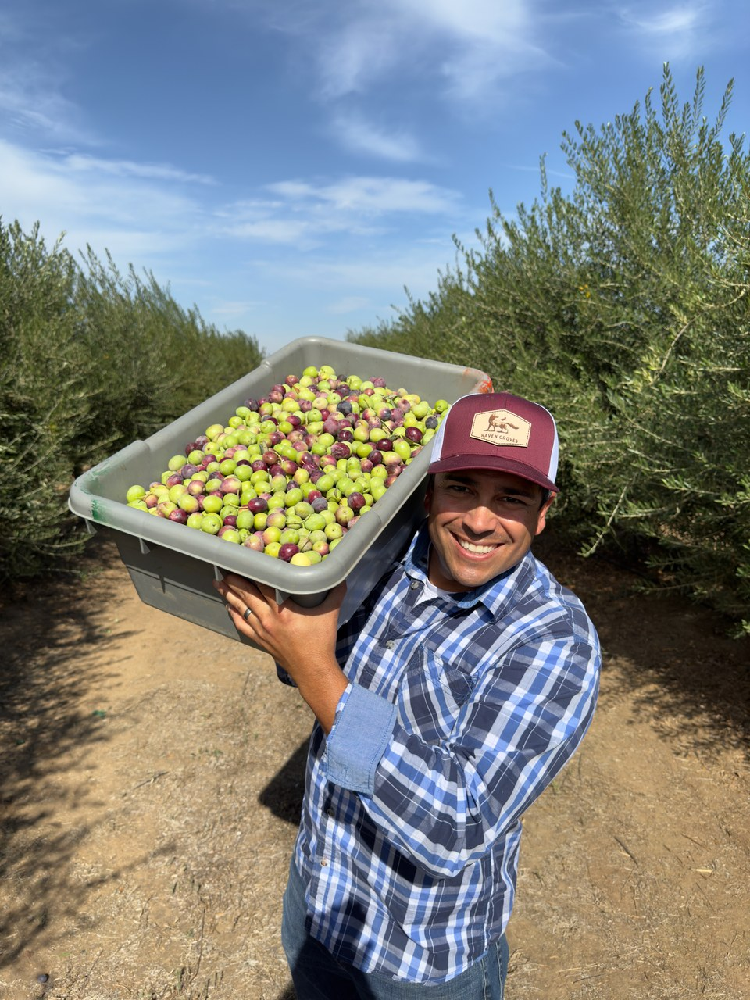

Wild Groves · For the Shopify blog
What's the Healthiest Olive Oil?
How to add it
- In Shopify, go to Online Store → Blog posts → Add blog post.
- Paste the Title below into the title box.
- In the content box, click the <> button (Show HTML). Click Copy article below and paste it in. Click <> again to go back. The photos and headings will appear.
- Under Featured image, upload the photo below (download it first).
- Paste the Excerpt into the excerpt box, and the Search description under "Search engine listing."
- Set the author, then save. Set it to Visible when you're ready to publish.
Title
What's the Healthiest Olive Oil?
Article
Featured image

Download photoExcerpt
I've always liked Dewey's olive oil, but the boldest, freshest one took me a while to appreciate. Here's what changed my mind, and why that peppery kick is a good thing.
Search description
I've always liked Dewey's olive oil, but the boldest, freshest one took me a while to appreciate. Here's what changed my mind, and why that peppery kick is a good thing.
The photos load from David's Field Notes site. If you'd rather keep them on Shopify, upload them in Content → Files and swap the image links.